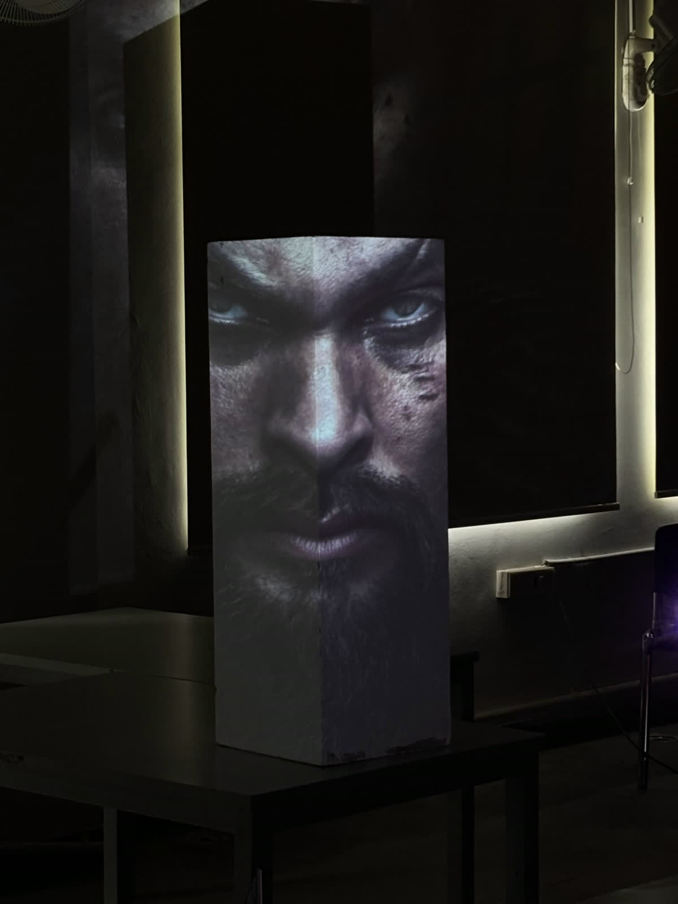
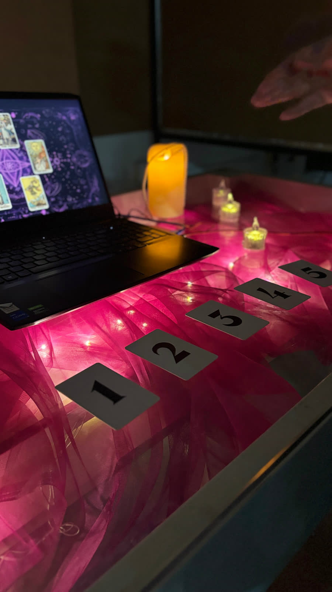
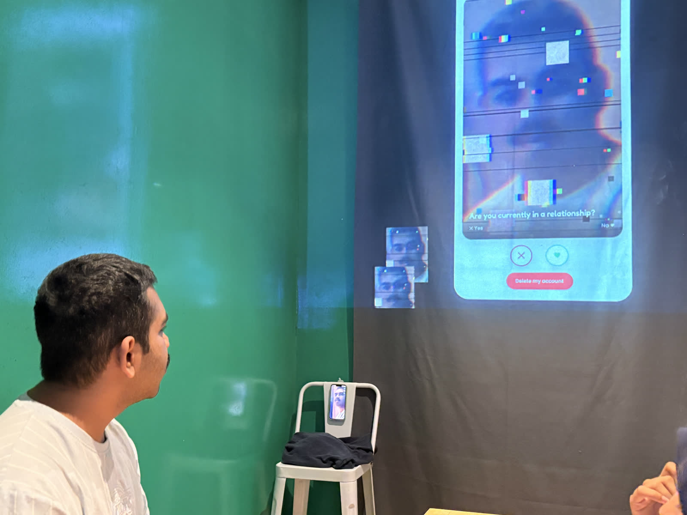
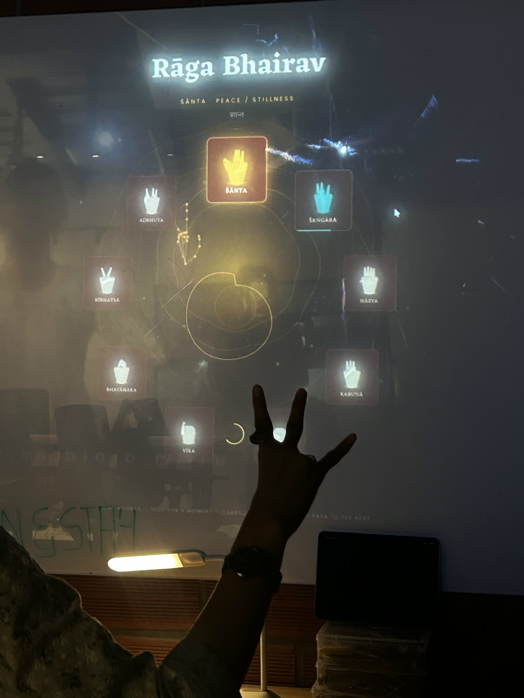
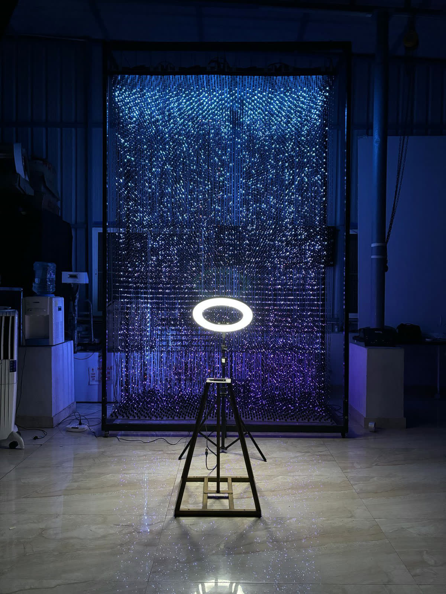

It is really, really fun getting other people excited about the things I am excited about.
That is most of what teaching is for me. The same toys from the work and play sections, sensors, projectors, TouchDesigner, a lot of cables, handed over to a room full of people who have not broken them yet. The best part is watching what they do next, because the point is what students leave able to do, not the work that comes out of it.
I have sat through enough classrooms to know which ones to steal from. The ones run for the teacher, I try not to repeat. The ones that asked what each learner needed, and treated every student as bringing something of their own to the room, I borrow from shamelessly.
Making sense of our senses
Five senses are all anyone can reliably depend on to perceive the world: sight, sound, touch, taste and smell.
New media asks for a medium to be approached in a wholly new way before it can be seen in a new way. The sessions start from there.
At JKLU, the course opens with a single exercise: design an interactive poster. A poster is a rectangular, portrait, one-to-many communication format; interaction implies a dialogue between the poster and its viewer.
There are two rules. The poster has to remain a poster. And if the interaction can be taken away and the poster still tells its story, the poster fails.
Student work from the exercise



From JKLU, the teaching continued at Somaiya.
Then Strate, as visiting faculty in new media design.

Beyond the classroom, an open workshop at Nodeshed introduced participants to the fundamentals of TouchDesigner.

More on the workshop in the Nodeshed write-up →